KNOWLEDGE IS POWER
Long before the invention of the modern wand or the structured spells taught in the classrooms of Hogwarts, magic was a raw, primal force. This ancient magic was chronicled in heavy, leather-bound grimoires, carved into weathered stone, and whispered through the pages of books that possess a consciousness of their own. Such knowledge is not merely read—it is experienced, and often, it is dangerous.
From the fiercely guarded shelves of the Restricted Section to the hidden vaults of ancient magical families, these artifacts represent the accumulated wisdom of the wizarding world. Some offer profound insight, while others curse those foolish enough to read them without the proper precautions.
I. BOOKS & DOCUMENTS
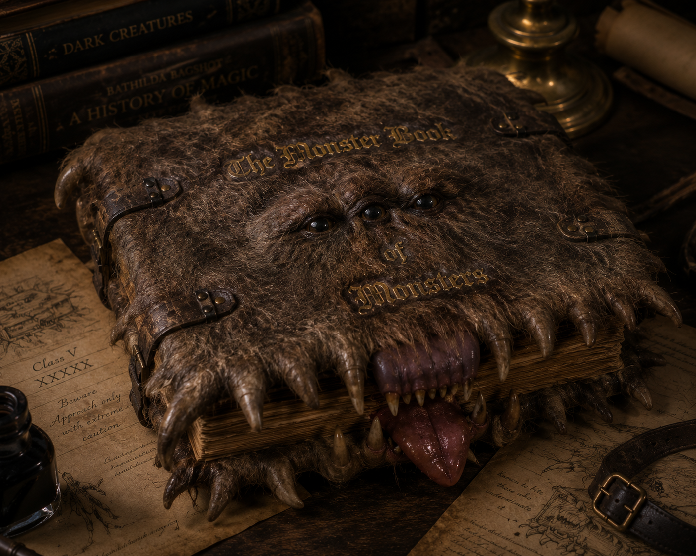
THE MONSTER BOOK OF MONSTERS
A particularly aggressive textbook assigned by Rubeus Hagrid for Care of Magical Creatures. Covered in thick fur with golden eyes and snapping fangs, the book behaves exactly like a savage animal, prone to biting anyone who attempts to open it carelessly.
The only safe way to access the knowledge within is to gently stroke the spine, which immediately causes the book to shudder, relax, and fall open compliantly. Flourish and Blotts' manager famously suffered numerous injuries trying to stock them.
ADVANCED POTION-MAKING
A required textbook for N.E.W.T.-level Potions students at Hogwarts. While the standard edition is perfectly adequate, one specific copy—once the property of the "Half-Blood Prince"—became an invaluable artifact of immense educational power.
Filled with cramped handwriting, the book contained brilliant alterations to standard brewing instructions that vastly improved potion efficacy. It also housed several original, dangerously potent spells invented by its former owner, Severus Snape.
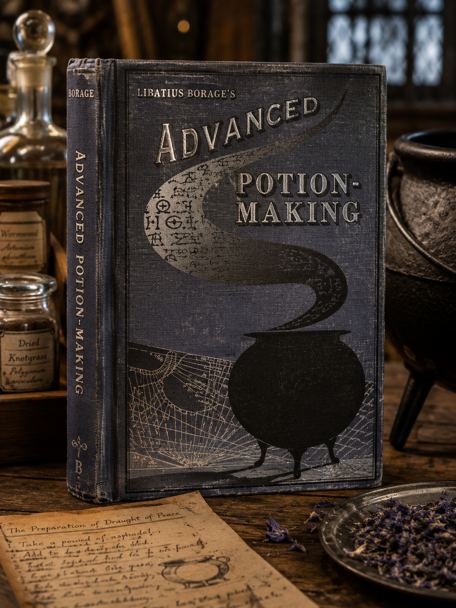
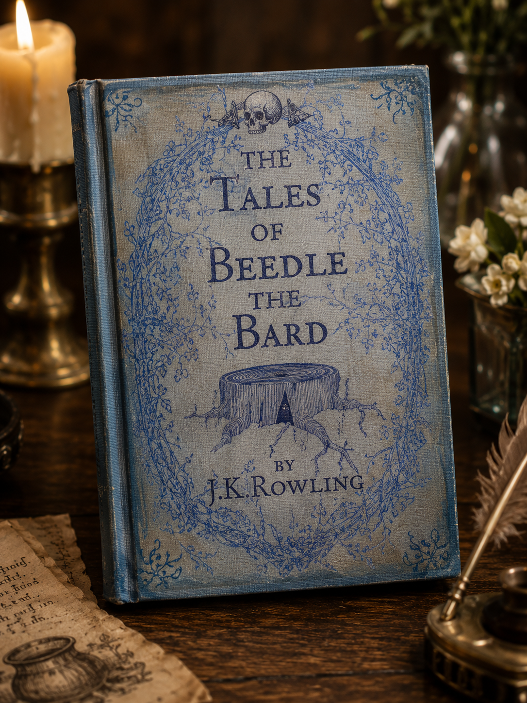
THE TALES OF BEEDLE THE BARD
A collection of popular wizarding children's fairy tales. Unlike Muggle fairy tales which often feature magic as the root of all trouble, Beedle's stories feature magic as a commonplace tool, where the heroes' triumphs are derived from their character and wit.
A highly valuable, original copy written in ancient runes was bequeathed to Hermione Granger by Albus Dumbledore. Within its pages lay the key to uncovering the truth behind "The Tale of the Three Brothers" and the Deathly Hallows.
HOGWARTS: A HISTORY
A massive, comprehensive volume detailing the origins, architecture, and magical secrets of Hogwarts School of Witchcraft and Wizardry. It is famously Hermione Granger's favorite reference book, heavily cited during times of crisis.
The text explains crucial enchantments that protect the castle, such as the impossibility of Apparating within the grounds, and the fact that Muggle technology goes haywire around high concentrations of magic. Curiously, it originally omitted the history of House-Elves at the school.
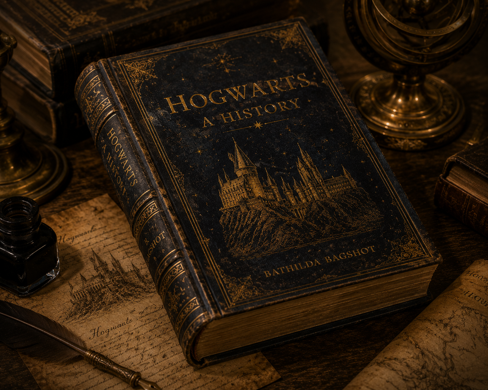
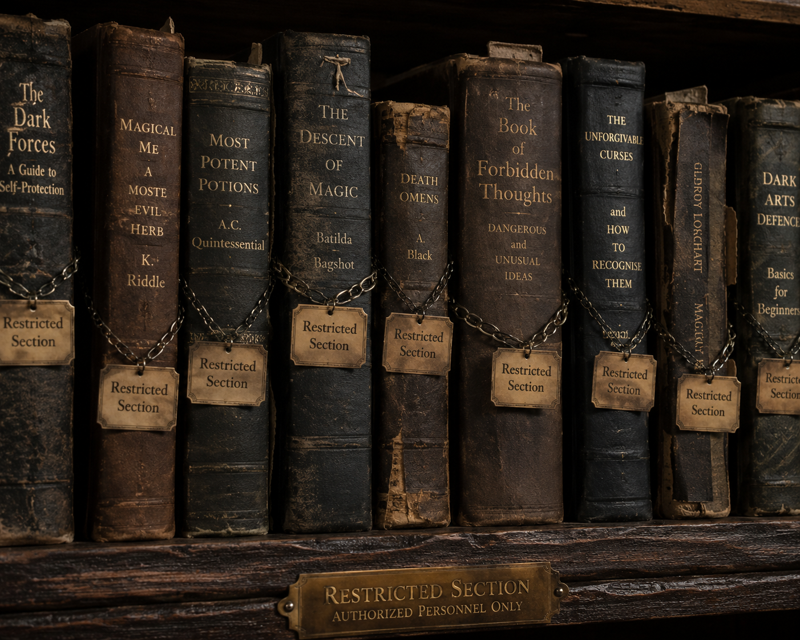
RESTRICTED SECTION BOOKS
Housed behind a locked rope in the Hogwarts Library, the Restricted Section contains books filled with advanced, dangerous, and dark magic. Students are strictly forbidden from accessing these texts without a signed note from a professor.
Many of these books are physically dangerous—some scream when opened, others are bound in unsettling materials, and some contain magic so corrupting it is hazardous to simply read the words on the page.
DARK MAGIC SPELLBOOKS
These forbidden texts delve into the darkest corners of magical theory. Volumes like *Magick Moste Evile* and *Secrets of the Darkest Art* contain instructions for curses meant to maim, kill, and dominate, as well as the abhorrent instructions for creating a Horcrux.
During his time as Headmaster, Albus Dumbledore removed the most dangerous of these books from the library entirely, keeping them hidden in his office to prevent impressionable students from stumbling upon unforgivable knowledge.
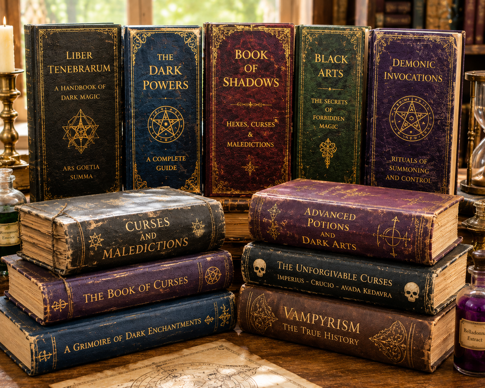
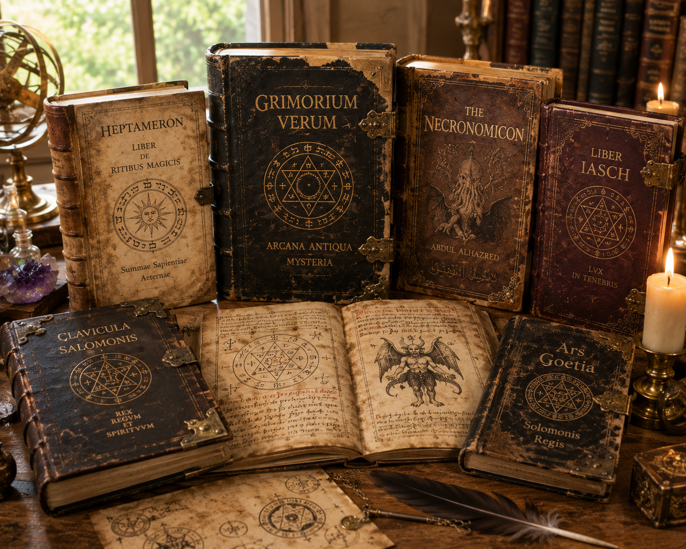
ANCIENT GRIMOIRES
Heirloom magical texts passed down through ancient pure-blood families for centuries. These heavy, deteriorating tomes are often written in dead languages or complex ciphers to protect family secrets.
They contain archaic spells, long-forgotten potion recipes, and familial enchantments that predate the establishment of the Ministry of Magic. They are immensely valuable to historians, but often laden with protective jinxes.
SPELL SCROLLS
Before the widespread adoption of bound books, magical knowledge was recorded on heavy parchment scrolls. These fragile artifacts often contain the rawest, oldest forms of incantations, requiring careful translation.
Scrolls found in ancient tombs or deep within the Department of Mysteries sometimes contain volatile magic; the enchantments woven into the parchment can accidentally discharge if unfurled incorrectly or handled by Muggles.
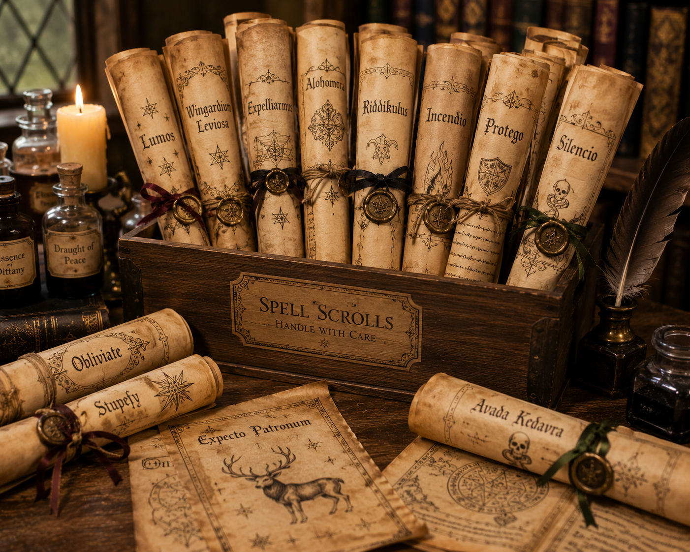
II. ANCIENT MAGIC OBJECTS
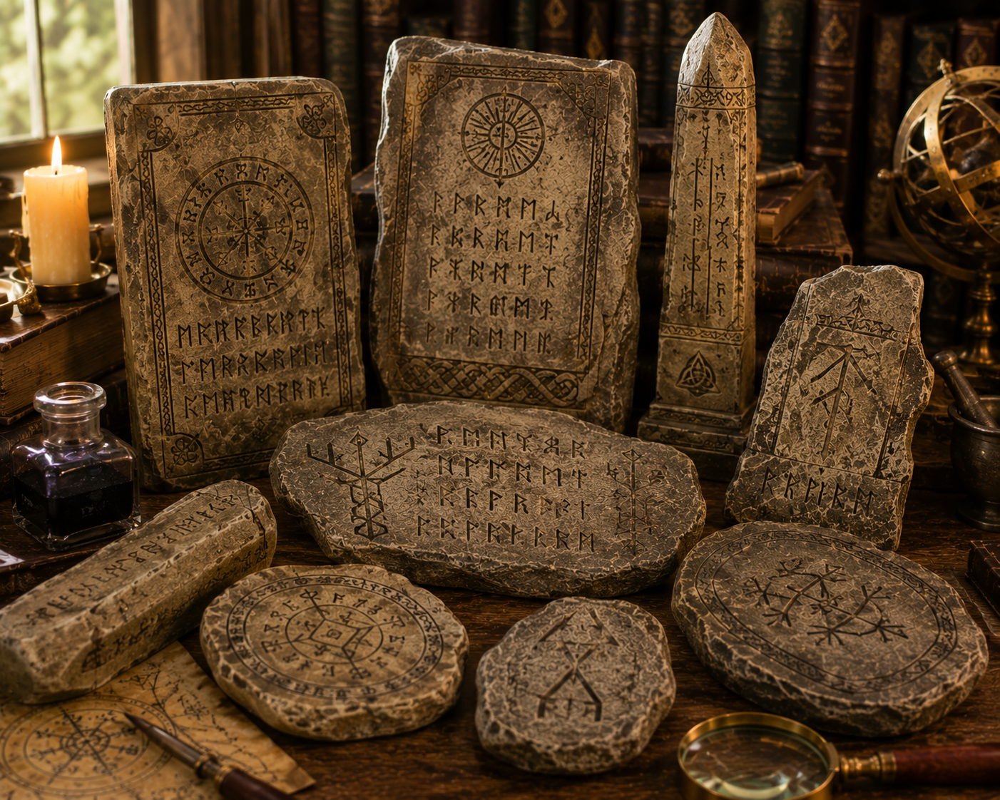
ANCIENT RUNE TABLETS
Stone and clay tablets bearing etched runic scripts from the dawn of wizarding civilization. The study of Ancient Runes is a rigorous academic subject at Hogwarts, essential for translating these primitive magical records.
Runes are not merely an alphabet; they are symbolic representations of magical concepts. Carving them into stone imbues the object with lasting enchantments, often used to seal ancient doors or curse tomb robbers.
ORACLE ORBS
Ancient precursors to modern crystal balls and Prophecy records, Oracle Orbs were utilized by the first true Seers. They are clouded glass or polished quartz spheres that capture the swirling mists of divination.
Unlike modern tools which require intense inner focus, Oracle Orbs frequently project visions outwardly into the room, creating an immersive, haunting display of the future or of distant events unfolding in the present.
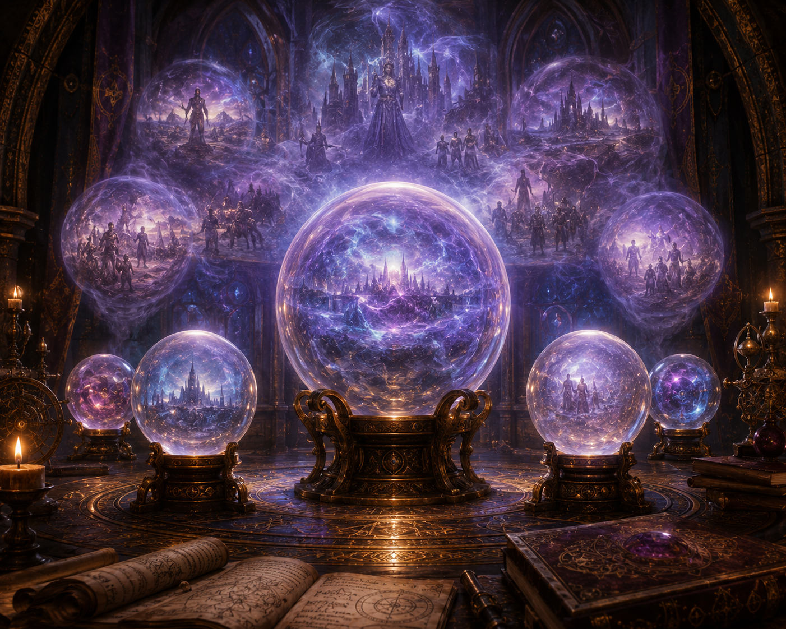
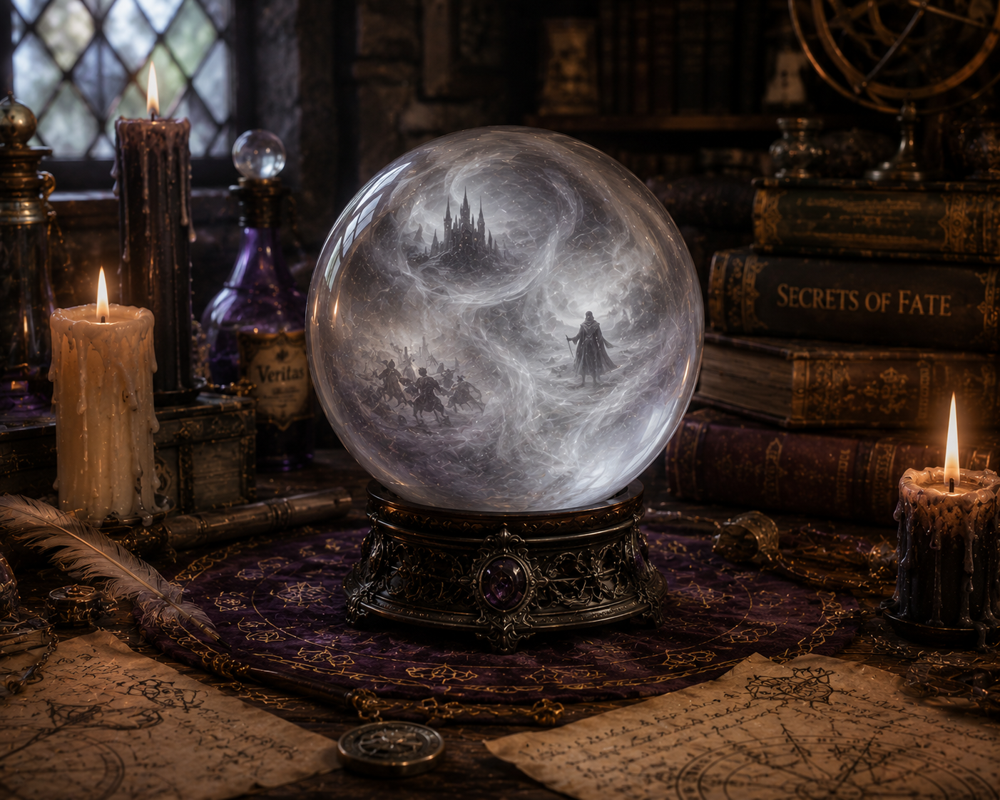
CRYSTAL BALLS
A staple of Divination classrooms, the crystal ball requires the seer to relax their vision and gaze into the mists within, waiting for shapes and symbols to form that portend the future.
Most wizards see nothing but white fog, as true "Inner Eye" talent is extraordinarily rare. However, in the hands of a gifted Seer, a crystal ball can reveal startlingly accurate, albeit cryptic, glimpses of destiny.
ENCHANTED MAPS
Beyond the famous Marauder's Map, ancient wizards crafted vast, complex maps charting the magical geography of the world. These maps do not merely show landmasses; they reveal ley lines, hidden magical settlements, and the migratory patterns of magical beasts.
Many such maps are charmed with concealing spells to hide from Muggle eyes, masquerading as blank parchment or changing their geography to look like a standard, mundane atlas until activated by a specific spell.
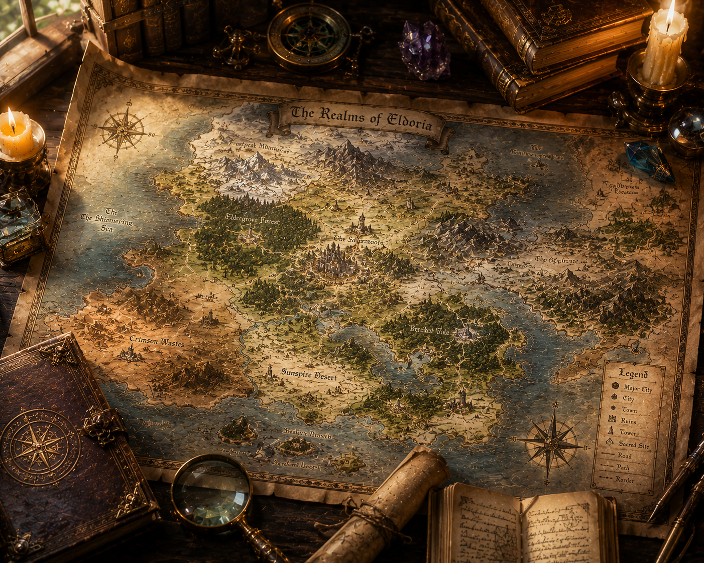
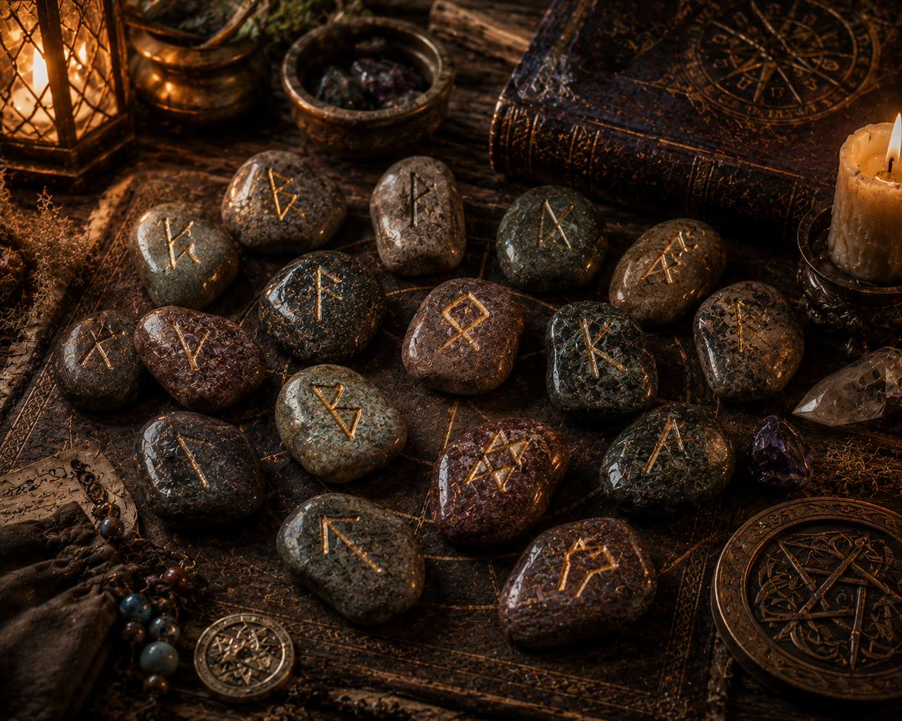
RUNE STONES
Small pebbles or crafted stones marked with individual runic symbols, often kept in a leather pouch. They are cast by diviners and ancient magic practitioners to glean answers to complex questions or to weave protective wards.
The interpretation of a rune cast depends heavily on the arrangement, proximity, and alignment of the stones as they fall. They are among the oldest forms of magical focus in existence, predating the wand by millennia.